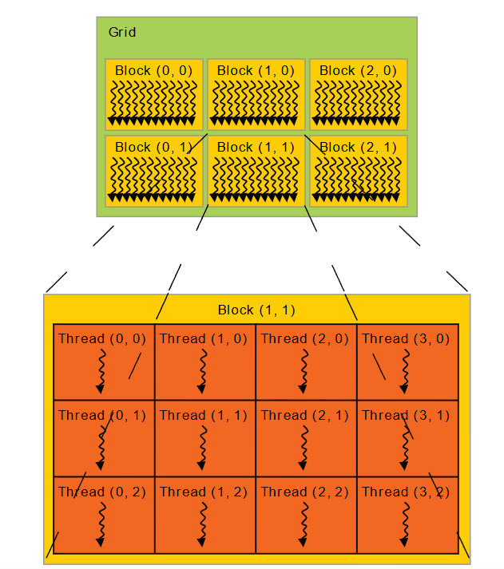
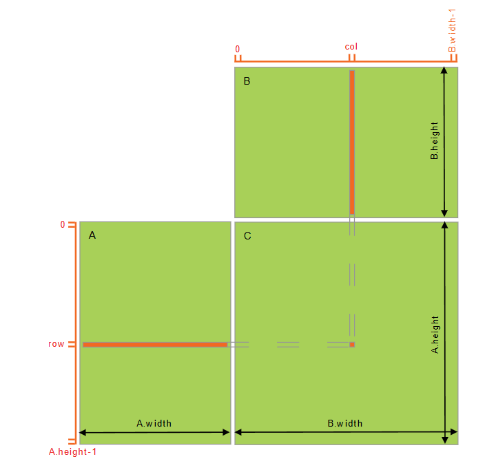
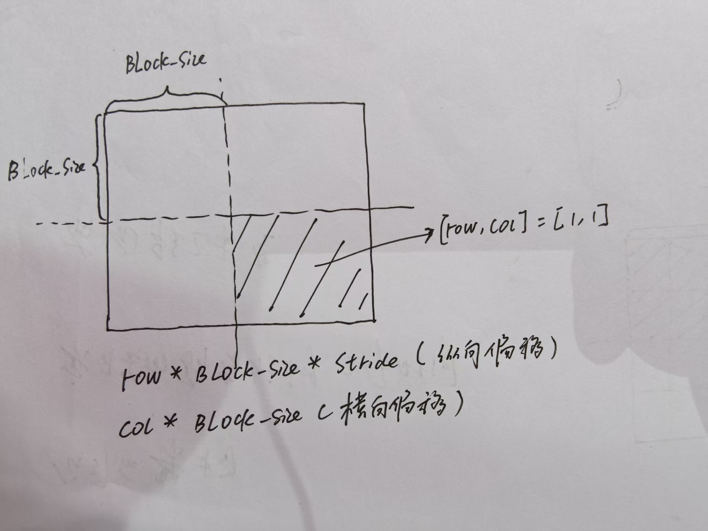
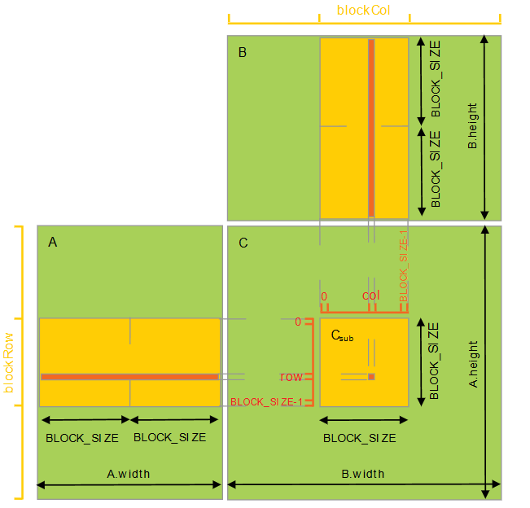
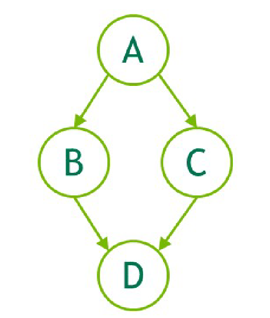

CUDA基础
可编程处理单元**（Graphic Processor Unit）日益发展成为高并行、多线程、多核处理的计算利器，2006年11月，NVIDIA推出了CUDA**——一种通用并行计算平台和编程模型，通过NVIDIA GPU中的并行计算引擎，以比CPU更高效的方式解决复杂的计算问题。
本文基于CUDA官方文档：1. Preface — CUDA C++ Best Practices Guide 12.9 documentation
GPU结构
CPU和GPU在计算单元上存在以下的不同：
| 组件 | CPU | GPU |
|---|---|---|
| 控制单元 | 1个强大的控制单元（Control） | 极简控制逻辑（图中未单独标注） |
| ALU数量 | 少量复杂ALU（通常4-8核） | 大量简单ALU（数千个流处理器） |
| 线程能力 | 支持少量并行线程（超线程优化） | 支持数万并发线程 |
CPU通过单个控制单元管理少量的ALU，GPU无集中标注的控制单元，突出多ALU（Arithmetic Logic Unit，算术逻辑单元）并行；此外CPU利用大容量多级缓存（L1/L2/L3）实现不同层级的信息缓存，GPU的共享缓存则很少量，两者都连接DRAM（Dynamic Random-Access Memory，动态随机存取存储器，用于临时存储计算机运行时所需的程序和数据，断电后数据丢失），但GPU的显存带宽通常是CPU的5-10倍。

总的来说，GPU通过高度并行运算，使用大量ALU组成流式多处理器（SM）来隐藏内存访问延迟，而不是像CPU一样利用大量的数据缓存和流控制来确保低延迟。
在CUDA并行编程中，有三个关键抽象为开发者提供高效的并行计算能力：
- 线程组层次结构（Hierarchy of Thread Groups）
- 共享内存（Shared Memory）
- 屏障同步（Barrier Synchronization）
线程组通过网格（Grid）、线程块（Block）、线程（Thread）的分层结构，利用共享内存__shared__进行快速数据交换，同时通过__syncthreads()确保数据的一致性，即块内所有的线程必须执行到当前点才能继续。

CUDA编程模型
首先需要明白CUDA 编程中的kernels的概念，kernel可以理解为CUDA扩展的下的函数实现，以C++为例（本文都采用C++作为示例），常规C++函数往往只能按序执行一次，而在kernels下，这些函数调用由N个不同的CUDA线程并行执行N次。
内核使用 __global__说明符定义，使用<<<block数、每个block的thread数>>>指定总的CUDA线程数（总线程数：numBlocks * threadPerBlock）,执行kernel的每个线程都有一个唯一的线程ID，即threadIdx。
threadIdx是一个可以包含三个维度的向量，可以通过下表中的计算公式获得：
| 维度 | 全局索引公式 |
|---|---|
| 1D | tid = blockIdx.x * blockDim.x + threadIdx.x |
| 2D | row = blockIdx.y * blockDim.y + threadIdx.y col = blockIdx.x * blockDim.x + threadIdx.x |
| 3D | x = blockIdx.x * blockDim.x + threadIdx.x y = blockIdx.y * blockDim.y + threadIdx.y z = blockIdx.z * blockDim.z + threadIdx.z |
threadIdx.x：线程在块内的 x 维索引（从 0 开始）blockIdx.x：块在网格中的 x 维索引blockDim.x：每个块的 x 维线程数gridDim.x：网格中 x 维的块数
对于一维块，线程索引和ID是相同的;对于大小为 （Dx， Dy） 的二维块，索引为 （x， y） 的线程 ID 为 （x + y Dx）;对于大小为 （Dx， Dy， Dz） 的三维块，索引为 （x， y， z） 的线程ID 为 （x + y Dx + z Dx Dy），可通过上表联立计算threadIdx得到。

同样的，通过blockIdx确定block所在的索引（可以理解为行），blockDim确定对应的维度，值得注意的是
<<<…>>>可以被指定为int 或者是 dim3，用于表示二维块或者网格。
以下看几个具体的编程示例:
两个一维的数组相加
1 | |
两个二维数组相加
1 | |
更为一般的情况
1 | |
在边缘端设备Jetson Orin Nano 8G、Cuda-11.4运行hello.cu
1 | |
1 | |
CUDA内存结构
CUDA线程在执行期间会访问到来自多个内存空间的数据，值得注意的是：
- 每个线程都有自己独立的私有内存（类似于进程中线程的独立栈空间）
- 同一个线程块中含有共享内存（shared memory），对该块中的所有线程可见，同时与该块具有相同的生命周期
- 除此之外，所有线程都可以访问相同的**全局内存（global memory）**以及只读的内存空间：常量内存（constant memory）和纹理内存（texture memory）

当执行一个C++程序时，其中的线性化流程会在Host（主设备）上运行，其余的可以并行的程序将会在一个个独立的Device（从设备）上运行（例如kernel），CUDA runtime用于管理kernel可见的全局内存、常量内存以及纹理内存，同时负责device的内存分配和释放，以及host与device之间的数据传输。
不同的GPU设备具备不同的计算能力，称之为“SM version”, NVIDIA GPU架构全览如下：
| 架构名称 | 发布时间 | 计算能力 (SM) | 代表产品 | 制程工艺 | 核心创新 |
|---|---|---|---|---|---|
| Tesla | 2006 | SM 1.x | GeForce 8800 GTX | 90nm | 首款支持CUDA的架构 |
| Fermi | 2010 | SM 2.x | GTX 480, Tesla C2050 | 40nm | 首次支持FP64、ECC显存、L1/L2缓存 |
| Kepler | 2012 | SM 3.x | GTX 680, Tesla K80 | 28nm | 动态并行、Hyper-Q、GPU Boost |
| Maxwell | 2014 | SM 5.x | GTX 980, Tesla M40 | 28nm | SMM设计、能效比提升2倍 |
| Pascal | 2016 | SM 6.x | GTX 1080 Ti, Tesla P100 | 16nm | NVLink 1.0、FP16支持、HBM2显存 |
| Volta | 2017 | SM 7.0/7.2 | Tesla V100, Titan V | 12nm | 首代Tensor Core、独立线程调度 |
| Turing | 2018 | SM 7.5 | RTX 2080 Ti, Tesla T4 | 12nm | RT Core、第二代Tensor Core（INT8/INT4）、GDDR6 |
| Ampere | 2020 | SM 8.x | RTX 3090, Tesla A100 | 7nm/8nm | 第三代Tensor Core（TF32）、MIG、结构化稀疏 |
| Hopper | 2022 | SM 9.x | H100 | 4nm | 第四代Tensor Core（FP8）、Transformer引擎、机密计算 |
| Ada Lovelace | 2022 | SM 8.9 | RTX 4090 | 5nm | DLSS 3、光追性能翻倍、AV1编码 |
| Blackwell | 2024* | SM 10.x* | B100 (预计) | 3nm* | FP6支持、新一代NVLink*（*为预测特性） |
可以通过在代码中嵌入如下命令显示对应的 “SM_version”
1 | |
CUDA编程接口
CUDA C++由C++ Language Extensions 和 CUDA Runtime组成，其中C++ Language Extensions即C++形式下的CUDA编程模型，例如C++形式下的kernels，而CUDA Runtime 则用于更底层的功能，运行在更低级的API上，例如在host 和 device之间传输数据，分配和释放内存，管理多个device等，往往使用C 和 C++混合实现。
NVCC编译
NVCC的编译过程分为两个主要阶段：
- 主机代码(Host Code)处理：处理CPU端的C++代码
- 设备代码(Device Code)处理：处理GPU端的CUDA代码
主要分为以下几个阶段：
- 预处理阶段：首先调用C/C++预处理器处理
.cu文件，处理所有#include、#define等预处理指令，展开宏定义。 - 代码分离：NVCC将代码分离为主机代码和设备代码，主机代码即普通的C++代码，由CPU执行，设备代码，即标记有
__global__、__device__等限定符的函数，由GPU执行。 - 设备代码编译：使用NVIDIA的专有编译器前端和后端将设备代码编译为PTX(Parallel Thread eXecution)虚拟汇编代码，或者是直接编译为cubin二进制格式(使用
-cubin选项)。 - 主机代码编译：生成修改过的主机代码，其中包含对CUDA Runtime API的调用，传递给系统的C++编译器(如gcc、clang等)
- 链接阶段：将所有对象文件(主机和设备)链接在一起，链接CUDA运行时库，生成最终的可执行文件。
编译时有如下选项：
--cuda：只生成主机代码，不进行设备代码编译-ptx：只生成PTX代码-cubin：生成cubin二进制文件-fatbin：生成fatbin文件(包含多种架构的二进制)-keep：保留中间文件用于调试
1 | |
Just-In-Time (JIT) 编译是一种动态编译技术，它在程序运行时(而非之前)将代码编译为机器指令。这种技术结合了解释执行的灵活性和预先编译(AOT, Ahead-Of-Time)的高效性。CUDA中的JIT编译将PTX代码在运行时编译为特定GPU的机器码，允许代码在不同代GPU上运行。
在CUDA中，JIT编译通常发生在：
- 应用程序加载PTX代码时
- 驱动程序将PTX即时编译为当前GPU的特定机器码
- 缓存编译结果供后续使用
CUDA Runtime
CUDA Runtime由cudart库实现，cudart库通过cudart.lib和libcudart.a静态链接，或者由cudart.dll或libcudart.so动态链接。
CUDA Runtime在第一次调用Runtime function时进行初始化，不显式初始化，在初始化期间，Runtime会为系统中的每个设备创建一个CUDA上下文，CUDA 上下文是指GPU 上的虚拟执行环境，包含所有 GPU 状态（内存、模块、流等）的容器，类似于 CPU 编程中的进程概念。
使用Runtime API隐式的创建上下文
1 | |
Device Memory
每个Host和Device都有自己独立的内存，Runtime提供分配释放Host memory和Device memory以及二者之间数据的传输。
Device memory 可以进一步分配为 linear memory 和 CUDA arrays，CUDA arrays是不透明的内存布局，而linear memory则被分配到一个统一的地址空间中。
linear memory通过 cudaMalloc()分配，cudaFree()释放，利用cudaMemcpy()进行host memory和device memory之间的数据传输。
下列命令实现了在Device 空间做运算，最后将device空间的数据拷贝到host空间
1 | |
进一步的，可以通过cudaMallocPitch() 和 cudaMalloc3D() 分配2D和3D的数组（对应的数据复制可以使用cudaMemcpy2D() 和 cudaMemcpy3D()）
1 | |
1 | |
1 | |

1 | |
有如下的变量声明
1 | |
使用 cudaMemcpyToSymbol将host内存拷贝到device端
1 | |
使用 cudaMemcpyFromSymbol将device侧拷贝到host内存
1 | |
Shared Memory
共享内存使用__shared__说明符实现，其速度比全局内存快得多，下面代码是一个矩阵乘法的实现
1 | |

进一步采用共享内存优化，将大矩阵分解为 BLOCK_SIZE × BLOCK_SIZE 的子矩阵，每个线程块计算一个子矩阵 Csub，每个线程计算 Csub 的一个元素，As 和 Bs 存储在共享内存中，减少对全局内存的访问，每个线程块只需加载 Asub 和 Bsub 一次，然后所有线程共享这些数据。
1 | |
值得注意的是 GetSubMatrix()的逻辑，其中的[row,col]是以整个Block为单位，而不再是以单个element为单元, 同时矩阵的宽度和高度必须是 BLOCK_SIZE 的整数倍。


Page-Locked Host Memory（页锁定主机内存）
Page-Locked Host Memory（也称为 Pinned Memory 或 Non-Pageable Memory）是 CUDA 中一种特殊的主机（CPU）内存分配方式，它禁止操作系统对这块内存进行分页交换（Page-Out），从而保证内存始终驻留在物理 RAM 中，不会因虚拟内存机制被换出到磁盘.
在默认情况下，主机内存是 Pageable（可分页的），操作系统可以随时将不活跃的内存页换出到磁盘（Swap Space）。但在 GPU 计算中，这会带来两个问题：
- 异步内存拷贝的效率问题
- CUDA 的
cudaMemcpy默认是同步操作，但如果使用cudaMemcpyAsync（异步拷贝），要求源或目标内存必须是 Page-Locked，否则无法保证 DMA（直接内存访问）的正确性。 - 如果内存可分页，GPU 驱动必须先临时锁定内存，再执行拷贝，这会降低性能。
- CUDA 的
- 零拷贝内存（Zero-Copy）支持
- Page-Locked Memory 可以直接映射到 GPU 地址空间，允许 GPU 直接访问主机内存（避免显式拷贝），但要求内存必须是锁定的
所以页锁主机内存适用于频繁的 CPU-GPU 数据传输（如深度学习数据加载），异步内存拷贝（cudaMemcpyAsync），以及Zero-Copy 内存（GPU 直接访问主机内存）
使用cudaHostAlloc 、cudaFreeHost 进行分配和释放内存
1 | |
cudaHostAlloc有如下的几个选项：
-
可移植内存（Portable Memory）
Page-Locked内存通常仅对分配时当前的GPU设备有效，通过
cudaHostAllocPortable标志分配的内存可被系统中所有GPU设备直接使用，适用于多GPU环境。1
2
3
4
5
6
7
8// 分配可移植的Page-Locked内存
cudaHostAlloc(&h_portable, N*sizeof(float), cudaHostAllocPortable);
// 在多个设备上使用
for (int dev = 0; dev < num_devices; dev++) {
cudaSetDevice(dev);
cudaMemcpyAsync(d_data[dev], h_portable, N*sizeof(float), cudaMemcpyHostToDevice, stream[dev]);
} -
写合并内存（Write-Combining Memory）
Page-Locked内存通常是可缓存的（Cacheable），会占用CPU的L1/L2缓存,通过
cudaHostAllocWriteCombined分配的内存为写合并内存，释放L1/L2缓存资源供其他应用使用，适用于主机频繁写入、GPU读取的数据（如实时数据采集）。1
2
3
4
5
6
7
8// 分配Write-Combining内存（仅主机写入）
cudaHostAlloc(&h_wc, N*sizeof(float), cudaHostAllocWriteCombined);
// 主机填充数据（快速）
for (int i = 0; i < N; i++) h_wc[i] = data[i];
// 传输到GPU（高效）
cudaMemcpyAsync(d_data, h_wc, N*sizeof(float), cudaMemcpyHostToDevice, stream); -
映射内存（Mapped Memory）
利用零拷贝（Zero-Copy），实现主机内存直接映射到GPU地址空间，无需显式拷贝。
主机地址：通过
cudaHostAlloc返回。设备地址：通过
cudaHostGetDevicePointer获取。1
2
3
4
5float *h_mapped;
cudaHostAlloc(&h_mapped, size, cudaHostAllocMapped);
float *d_mapped;
cudaHostGetDevicePointer(&d_mapped, h_mapped, 0);内核访问时自动触发传输，无需
cudaMemcpy, 同时确保了数据传输与内核计算自动并行。异步并发执行
CUDA将以下操作视为独立任务，可并行执行：
- 主机计算（CPU任务）
- 设备计算（GPU内核）
- 主机→设备内存传输（H2D）
- 设备→主机内存传输（D2H）
- 设备内内存传输（D2D）
- 多设备间内存传输
-
Host与Device并发执行
异步函数：通过非阻塞调用（如
cudaMemcpyAsync、kernel<<<...>>>）让主机线程立即返回，无需等待设备完成。注：
cudaMemcpyAsync是 CUDA 中用于异步内存拷贝的核心函数，它的主要作用是在不阻塞主机（CPU）线程的情况下，在主机（Host）与设备（Device）之间或设备内部传输数据。与同步版本的cudaMemcpy不同，cudaMemcpyAsync允许 CPU 在数据传输的同时继续执行其他任务，从而实现计算与传输的重叠，提升程序的整体效率。 -
并发内核执行
设备需Compute Capability ≥ 2.0，且
concurrentKernels属性为1。-
上下文隔离：不同CUDA上下文的内核无法并发。
-
资源竞争：占用大量纹理内存或本地内存的内核会降低并发性。
1
2int can_concurrent;
cudaDeviceGetAttribute(&can_concurrent, cudaDevAttrConcurrentKernels, dev);
-
-
数据传输与内核执行重叠
-
设备需支持
asyncEngineCount > 0。 -
必须使用Page-Locked主机内存
-
H2D/D2H传输与内核执行重叠：
- 异步拷贝（
cudaMemcpyAsync）与内核并发。
- 异步拷贝（
-
设备内拷贝（D2D）与内核执行重叠：
-
需
concurrentKernels支持1
2
3
4
5
6
7
8
9
10
11
12cudaStream_t stream1, stream2;
cudaStreamCreate(&stream1);
cudaStreamCreate(&stream2);
// 异步H2D传输（流1）
cudaMemcpyAsync(d_data, h_data, size, cudaMemcpyHostToDevice, stream1);
// 内核执行（流2，与传输重叠）
kernel<<<grid, block, 0, stream2>>>(d_data);
// 异步D2H传输（流1）
cudaMemcpyAsync(h_result, d_data, size, cudaMemcpyDeviceToHost, stream1);
-
-
-
-
并发数据传输
- 设备需
asyncEngineCount = 2（Compute Capability ≥ 2.0）。 - 必须使用Page-Locked内存。
- 同时进行H2D和D2H传输（双向重叠）
- 设备需
-
流管理
流是命令序列（如内核、内存拷贝），在同一流内顺序执行，不同流间可能并发，无显式同步时，流间执行顺序不确定。
流的创建与销毁
1
2
3
4
5
6
7
8cudaStream_t stream;
cudaStreamCreate(&stream); // 创建流
// 在流中执行操作
kernel<<<grid, block, 0, stream>>>(...);
cudaMemcpyAsync(..., stream);
cudaStreamDestroy(stream); // 销毁流（若流未完成，自动等待后释放资源）1
2
3
4
5
6
7
8
9
10
11
12
13
14
15
16
17
18
19
20
21
22
23
24
25
26
27cudaStream_t streams[2];
float *h_pinned, *d_data;
cudaMallocHost(&h_pinned, 2 * size); // Page-Locked内存
cudaMalloc(&d_data, 2 * size);
// 创建流
for (int i = 0; i < 2; i++)
cudaStreamCreate(&streams[i]);
// 异步操作（流间可能并发）
for (int i = 0; i < 2; i++) {
cudaMemcpyAsync(d_data + i*size, h_pinned + i*size,
size, cudaMemcpyHostToDevice, streams[i]);
kernel<<<grid, block, 0, streams[i]>>>(d_data + i*size);
cudaMemcpyAsync(h_pinned + i*size, d_data + i*size,
size, cudaMemcpyDeviceToHost, streams[i]);
}
// 同步所有流
for (int i = 0; i < 2; i++)
cudaStreamSynchronize(streams[i]);
// 释放资源
cudaFreeHost(h_pinned);
cudaFree(d_data);
for (int i = 0; i < 2; i++)
cudaStreamDestroy(streams[i]);未指定流或流为
0时使用全局NULL流（隐式同步所有操作），即默认的编译选项--default-stream legacy，也可以指定–default-stream per-thread或定义宏CUDA_API_PER_THREAD_DEFAULT_STREAM来使每个主机线程都有独立的默认流，支持并发。流的同步方式有两种：
-
显式同步
1
2
3
4
5cudaStreamSynchronize(stream); // 等待流完成
cudaDeviceSynchronize(); // 等待所有流完成
cudaStreamWaitEvent();
cudaStreamQuery( -
隐式同步
NULL流中的操作会同步所有其他流。
-
当主机线程在两个流的命令之间插入以下操作时，不同流的命令将失去并发性，导致串行执行:
-
页锁定主机内存分配
1
cudaMallocHost(&ptr, size); // 阻塞所有流的并发 -
设备内存分配
1
cudaMalloc(&d_ptr, size); // 强制同步 -
设备内存初始化（如cudaMemset）
1
cudaMemset(d_ptr, 0, size); // 隐式同步点 -
同一设备内存的拷贝（D2D）
1
cudaMemcpy(dst, src, size, cudaMemcpyDeviceToDevice); // 内部同步 -
NULL流（默认流）中的任何操作
1
kernel<<<grid, block>>>(); // 默认流操作会同步所有流 -
L1/Shared内存配置切换 （针对Compute Capability 3.x/7.x设备）
两个流之间的执行重叠量取决于向每个流发出命令的顺序，以及设备是否支持数据传输和内核执行的重叠，并发内核执行，或并发数据传输。
场景 问题根源 优化方法 不支持并发数据传输的设备 H2D/D2H共用引擎 无解，需升级硬件 支持并发数据传输的设备 任务提交顺序限制重叠 分组提交（H2D→Kernel→D2H） 计算能力≤3.0的设备 内核启动依赖全局线程块进度 提前提交所有内核，延迟D2H 任何设备 NULL流或隐式同步操作 使用显式流，避免全局操作 例如，我们在不支持并发数据传输的设备上，执行下面的逻辑：
1
2// 流0：H2D -> Kernel -> D2H
// 流1：H2D -> Kernel -> D2H （提交顺序导致串行化）流1的H2D必须等待流0的D2H完成（因为D2H和H2D共用传输引擎）,由于零重叠，所以流0和流1是完全串行执行。
cudaLaunchHostFunc函数在CUDA流的特定位置插入一个主机端函数，该函数会在流中此前所有命令完成后自动触发，由CUDA runtime调度，不会阻塞1
2
3
4
5cudaError_t cudaLaunchHostFunc(
cudaStream_t stream, // 目标流
cudaHostFn_t fn, // 回调函数指针
void* userData // 传递给回调的用户数据
);1
2
3
4
5void CUDART_CB MyCallback(
cudaStream_t stream, // 关联的流
cudaError_t status, // 流中前置操作的状态（成功/错误）
void* data // 用户数据
);1
2
3
4cudaMemcpyAsync(..., stream); // 操作1
kernel<<<..., stream>>>(); // 操作2
cudaLaunchHostFunc(stream, MyCallback, data); // 回调
// MyCallback 仅在操作1和2完成后执行需要注意的是回调函数调用CUDA API（如
cudaMemcpy），可能等待自身完成，导致死锁。在运行时，高优先级流中的待处理工作优先于低优先级流中的待处理工作
可以使用
cudaDeviceGetStreamPriorityRange()获取当前的优先级范围，并且利用cudaStreamCreateWithPriority()设定流的优先级。1
2
3
4
5
6
7// get the range of stream priorities for this device
int priority_high, priority_low;
cudaDeviceGetStreamPriorityRange(&priority_low, &priority_high);
// create streams with highest and lowest available priorities
cudaStream_t st_high, st_low;
cudaStreamCreateWithPriority(&st_high, cudaStreamNonBlocking, priority_high);
cudaStreamCreateWithPriority(&st_low, cudaStreamNonBlocking, priority_low);Graphs
传统流模型每次内核启动或内存拷贝都需要CPU驱动执行设置工作（如参数验证、GPU命令生成），对于短时内核，开销占比显著，而且无法让CUDA看到完整任务流，难以全局优化。
对此Graphs将整个工作流（包括操作和依赖）预先定义为图结构，后续可重复执行，也方便了实例化阶段完成大部分初始化，减少运行时开销。
以下是创建一个图的简单流程：
1
2
3
4
5
6
7
8
9
10
11
12
13
14
15
16// Create the graph - it starts out empty
cudaGraphCreate(&graph, 0);
// For the purpose of this example, we'll create
// the nodes separately from the dependencies to
// demonstrate that it can be done in two stages.
// Note that dependencies can also be specified
// at node creation.
cudaGraphAddKernelNode(&a, graph, NULL, 0, &nodeParams);
cudaGraphAddKernelNode(&b, graph, NULL, 0, &nodeParams);
cudaGraphAddKernelNode(&c, graph, NULL, 0, &nodeParams);
cudaGraphAddKernelNode(&d, graph, NULL, 0, &nodeParams);
// Now set up dependencies on each node
cudaGraphAddDependencies(graph, &a, &b, 1); // A->B
cudaGraphAddDependencies(graph, &a, &c, 1); // A->C
cudaGraphAddDependencies(graph, &b, &d, 1); // B->D
cudaGraphAddDependencies(graph, &c, &d, 1); // C->D
也可以同步捕获流来创建一个图：
1
2
3
4
5
6
7
8cudaGraph_t graph;
cudaStreamBeginCapture(stream); // 进入捕获模式,后续放入流的操作不会立即执行，而是被记录到内部图中
kernel_A<<< ..., stream >>>(...); //被捕获为图节点
kernel_B<<< ..., stream >>>(...);
libraryCall(stream); //// 库函数调用（需支持捕获）
kernel_C<<< ..., stream >>>(...);
cudaStreamEndCapture(stream, &graph); //// 返回构建的图graph支持普通流和每线程流（
cudaStreamPerThread），不支持传统NULL流（cudaStreamLegacy），可以通过下述代码查询：1
cudaStreamIsCapturing(stream, &isCapturing); // 检查流是否处于捕获模式上图的依赖关系，我们可以通过引入事件来实现跨流的依赖：
1
2
3
4
5
6
7
8
9
10
11
12
13
14
15// stream1 is the origin stream
cudaStreamBeginCapture(stream1);
kernel_A<<< ..., stream1 >>>(...);
// Fork into stream2
cudaEventRecord(event1, stream1);
cudaStreamWaitEvent(stream2, event1);
kernel_B<<< ..., stream1 >>>(...);
kernel_C<<< ..., stream2 >>>(...);
// Join stream2 back to origin stream (stream1)
cudaEventRecord(event2, stream2);
cudaStreamWaitEvent(stream1, event2);
kernel_D<<< ..., stream1 >>>(...);
// End capture in the origin stream
cudaStreamEndCapture(stream1, &graph);
// stream1 and stream2 no longer in capture mode可以这样理解上述的代码：首先创建了stream1这条流，从kernel_A 触发，生成对的event1事件，创建第二条流等待event1事件，也就是kernel_A的创建完成，那么stream2也自然建立了和kernel_A的关系，kernel_B延续stream1，kernel_C延续stream2, 之后建立第二个事件 也就是stream2（kernel_C的是否完成），同时stream1流等待event2，当stream1流和stream2流都通过时，也就是kernel_B和kernel_C都完成时，kernel_C延续stream1，从而实现了图示的效果。
注意下面的代码：
1
2
3
4
5
6
7
8
9
10
11
12
13
14
15
16
17
18
19
20// stream1 is the origin stream
cudaStreamBeginCapture(stream1);
kernel_A<<< ..., stream1 >>>(...);
// Fork into stream2
cudaEventRecord(event1, stream1);
cudaStreamWaitEvent(stream2, event1);
kernel_B<<< ..., stream1 >>>(...);
kernel_C<<< ..., stream2 >>>(...);
// 错误依赖关系
cudaEventRecord(event2, stream1);
cudaStreamWaitEvent(stream2, event2);
//这里编程stream2 无影响
kernel_D<<< ..., stream2 >>>(...);
// End capture in the origin stream
cudaStreamEndCapture(stream1, &graph);
// stream1 and stream2 no longer in capture mode由于先创建了stream1，所以stream1最大可能最先执行完，所以stream1需要等待stream2的完成，而不是stream2等待stream1，而最后的kernel_D无论基于哪个流，二者都已经同步完成，所以不影响。
需要注意的是：
cudaStreamBeginCapture哪个流开始，cudaStreamEndCapture必须结束对应的流。捕获模式下的流和事件仅是图构建的临时抽象，不代表实际GPU任务队列。尝试同步/查询会导致：
- 逻辑矛盾（无法查询未提交执行的任务状态）
- 潜在死锁（捕获未完成却要求同步）
1
2
3cudaStreamBeginCapture(stream);
kernel<<<..., stream>>>();
cudaStreamSynchronize(stream); // 错误！流在捕获模式跨图合并也是禁止的：
1
2
3
4
5
6
7
8// 图1
cudaStreamBeginCapture(stream1);
cudaEventRecord(event1, stream1);
cudaStreamEndCapture(stream1, &graph1);
// 图2（错误尝试合并）
cudaStreamBeginCapture(stream2);
cudaStreamWaitEvent(stream2, event1); // 错误！event1属于不同图可以按照如下流程处理失效的情况：

最后需要注意的是，图定义对象（
cudaGraph_t）不能被多线程同时访问（包括创建/修改/销毁）1
2
3
4
5
6
7cudaGraph_t graph;
// 线程1
cudaGraphAddKernelNode(&node1, graph, ...);
// 线程2（同时操作同一graph）
cudaGraphAddMemcpyNode(&node2, graph, ...); // 危险！这时候需要使用线程互斥锁保护图对象操作：
1
2
3
4
5std::mutex graph_mutex;
{
std::lock_guard<std::mutex> lock(graph_mutex);
cudaGraphAddKernelNode(&node, graph, ...);
}可执行图实例（
cudaGraphExec_t）不能并发执行同一实例,连续启动同一可执行图时，CUDA保证1
Launch 1 → Launch 2 → Launch 3 （严格顺序）即使使用不同流，也无法实现同一图实例的并行执行：
1
2cudaGraphLaunch(execGraph, stream1); // 第一次启动
cudaGraphLaunch(execGraph, stream2); // 阻塞直到第一次完成可以采用如下的方式实现多线程共享图：
1
2
3
4
5
6
7
8// 主线程构建图
cudaGraph_t graph;
buildGraph(&graph);
// 子线程使用（只读）
cudaGraphExec_t localExec;
cudaGraphInstantiate(&localExec, graph, ...); // 每个线程独立实例化
cudaGraphLaunch(localExec, localStream);1
2
3
4
5
6
7cudaGraphExec_t execGraph1, execGraph2;
cudaGraphInstantiate(&execGraph1, graph, ...);
cudaGraphInstantiate(&execGraph2, graph, ...); // 创建副本
// 真正并行执行
cudaGraphLaunch(execGraph1, stream1);
cudaGraphLaunch(execGraph2, stream2);CUDA 事件(Event)是 CUDA 编程中用于监控设备执行进度和精确计时的机制。它们允许应用程序在程序中的任意点异步记录事件，并查询这些事件的完成状态。
- 事件完成意味着所有在该事件之前提交的任务（或指定流中的所有命令）已完成
- 流0(默认流)中的事件在所有流中所有前置任务和命令完成后才标记为完成
- 主要用于：计时操作、同步点、性能分析
cudaEventCreate函数创建一个新的事件对象，可以通过cudaEvent_t类型的变量引用:1
2
3cudaEvent_t start, stop;
cudaEventCreate(&start);
cudaEventCreate(&stop);当不再需要事件时，应该销毁它以释放相关资源:
1
2cudaEventDestroy(start);
cudaEventDestroy(stop);事件最常用的场景是测量代码段的执行时间，特别是异步操作的执行时间:
1
2
3
4
5
6
7
8
9
10
11
12
13
14
15
16
17
18
19
20
21
22// 记录开始事件
cudaEventRecord(start, 0); // 0表示默认流
// 执行要计时的代码
for (int i = 0; i < 2; ++i) {
cudaMemcpyAsync(inputDev + i * size, inputHost + i * size,
size, cudaMemcpyHostToDevice, stream[i]);
MyKernel<<<100, 512, 0, stream[i]>>>
(outputDev + i * size, inputDev + i * size, size);
cudaMemcpyAsync(outputHost + i * size, outputDev + i * size,
size, cudaMemcpyDeviceToHost, stream[i]);
}
// 记录结束事件
cudaEventRecord(stop, 0);
// 等待事件完成
cudaEventSynchronize(stop);
// 计算时间差
float elapsedTime;
cudaEventElapsedTime(&elapsedTime, start, stop);Multi-Device System（多设备系统）
在具有多个GPU的系统中，CUDA提供了设备枚举功能来识别和查询可用设备：
1
2
3
4
5
6
7
8
9
10
11
12int deviceCount;
cudaGetDeviceCount(&deviceCount); // 获取系统中CUDA设备数量
for (int device = 0; device < deviceCount; ++device) {
cudaDeviceProp deviceProp;
cudaGetDeviceProperties(&deviceProp, device); // 获取设备属性
printf("Device %d: %s\n", device, deviceProp.name);
printf(" Compute Capability: %d.%d\n",
deviceProp.major, deviceProp.minor);
printf(" Total Global Memory: %.2f GB\n",
deviceProp.totalGlobalMem/1024.0/1024.0/1024.0);
}每个主机线程有"当前设备"的概念，内存分配和内核启动都在当前设备上执行，默认当前设备是设备0：
1
2
3
4
5
6
7
8//使用cudaSetDevice切换设备
cudaSetDevice(0); // 切换到设备0
float* d_data0;
cudaMalloc(&d_data0, size); // 在设备0上分配内存
cudaSetDevice(1); // 切换到设备1
float* d_data1;
cudaMalloc(&d_data1, size); // 在设备1上分配内存涉及到对于流的处理时，如果内核启动是向未与当前设备关联的流发出的，则内核启动将失败：
1
2
3
4
5
6
7
8
9
10cudaSetDevice(0); // Set device 0 as current
cudaStream_t s0;
cudaStreamCreate(&s0); // Create stream s0 on device 0
MyKernel<<<100, 64, 0, s0>>>(); // Launch kernel on device 0 in s0
cudaSetDevice(1); // Set device 1 as current
cudaStream_t s1;
cudaStreamCreate(&s1); // Create stream s1 on device 1
MyKernel<<<100, 64, 0, s1>>>(); // Launch kernel on device 1 in s1
// This kernel launch will fail:
MyKernel<<<100, 64, 0, s0>>>(); // Launch kernel on device 1 in s0对于跨设备操作，遵循以下的规则：
操作 跨设备行为 cudaEventRecord 事件和流必须在同一设备 cudaEventElapsedTime 两个事件必须在同一设备 cudaEventSynchronize/Query 支持跨设备操作 cudaStreamWaitEvent 支持跨设备同步 对于支持PCIe拓扑或NVLink连接的设备之间可以进行点对点访问：
1
2
3
4
5
6
7
8
9
10int canAccessPeer;
cudaDeviceCanAccessPeer(&canAccessPeer, 0, 1); // 检查设备0能否访问设备1
if (canAccessPeer) {
cudaSetDevice(0);
cudaDeviceEnablePeerAccess(1, 0); // 设备0启用对设备1的访问
cudaSetDevice(1);
cudaDeviceEnablePeerAccess(0, 0); // 设备1启用对设备0的访问
}P2P内存访问可直接访问对等设备内存，避免通过主机内存中转，使得指针在不同设备间保持有效性。
1
2
3
4
5
6
7
8// 设备0上分配内存
cudaSetDevice(0);
float* p0;
cudaMalloc(&p0, size);
// 设备1上直接使用设备0的内存
cudaSetDevice(1);
MyKernel<<<blocks, threads>>>(p0); // 直接访问设备0的内存1
2
3
4
5
6
7
8// 传统方法(通过主机中转)
cudaSetDevice(0);
cudaMemcpy(hostPtr, dev0Ptr, size, cudaMemcpyDeviceToHost);
cudaSetDevice(1);
cudaMemcpy(dev1Ptr, hostPtr, size, cudaMemcpyHostToDevice);
// P2P直接拷贝
cudaMemcpyPeer(dev1Ptr, 1, dev0Ptr, 0, size); // 设备0到设备1的直接拷贝异步拷贝方式如下：
1
cudaMemcpyPeerAsync(dest, destDevice, src, srcDevice, size, stream);在Linux系统上应禁用IOMMU以获得最佳P2P性能，IOMMU（Input-Output Memory Management Unit）是一种硬件功能，它类似于CPU中的MMU（内存管理单元），但专门为I/O设备设计，用于管理设备对系统内存的访问。
特性 MMU IOMMU 服务对象 CPU I/O设备 主要功能 虚拟地址→物理地址转换 设备地址→物理地址转换 保护目标 进程间内存隔离 设备间内存隔离
统一地址空间是CUDA架构中一项重要特性，它从根本上简化了多设备系统中的内存管理，在64位进程中，CUDA创建一个跨越主机内存和所有计算能力2.0+设备内存的单一虚拟地址空间：
- 每个内存地址在系统中具有唯一性
- 指针值本身包含位置信息（主机/设备）
- 地址范围：通常为40位或48位虚拟地址空间（取决于GPU架构）
利用GPU同一地址空间可以实现：
**指针属性的查询：**通过cudaPointerGetAttributes()可确定指针的实际位置
1 | |
**智能内存的拷贝：**使用cudaMemcpyDefault自动判断拷贝方
1 | |
便携式内存分配cudaHostAlloc分配的内存自动支持
1 | |
和Linux的进程间通信一样，CUDA IPC（Inter-Process Communication）是一组允许不同进程间共享GPU内存和事件的高级功能，对于同一进程的所有线程天然共享设备指针和事件句柄，不同进程的地址空间相互独立，需显式IPC机制。
需要注意的是，cudaMallocManaged分配的内存不支持IPC，通信进程必须使用相同版本的CUDA驱动和运行时。
可以通过内存共享和事件共享来实现IPC通信：
对于内存共享，在GPU页表中建立跨进程映射，使用唯一的IPC句柄替代裸指针，同时采用引用计数，防止过早释放共享内存。
发送方进程执行：
1 | |
接收方进程执行：
1 | |
可以指定Handle的打开模式：
| 模式标志 | 说明 |
|---|---|
cudaIpcMemLazyEnablePeerAccess |
按需自动建立P2P访问 |
cudaIpcMemLazyDisablePeerAccess |
禁用P2P访问 |
对于事件共享，在设备层面创建跨进程可见对象，通过GPU硬件信号实现跨进程同步。
1 | |
必须使用cudaEventInterprocess标志创建事件，此时的共享事件只能用于同步，而不能用于计时。
CUDA Error Checking
所有CUDA Runtime函数运行失败都会返回错误码，对于异步函数，因为该函数在设备完成任务之前返回，错误代码仅仅报告在运行任务之前host上发生的错误，不可能报告device上任何异步错误，需要后续进行同步操作检测。
对于同步函数：
1 | |
对于异步函数：
1 | |
CUDA Errorshiyong如下API进行检测：
| 函数 | 返回值 | 副作用 | 适用场景 |
|---|---|---|---|
cudaPeekAtLastError() |
当前错误码 | 无 | 检查错误但不破坏错误上下文 |
cudaGetLastError() |
当前错误码 | 重置为cudaSuccess | 标准错误处理流程 |
对于标准的内核错误，参照如下方式进行：
1 | |
对于流式错误检测：
1 | |
如何处理错误，在CUDA 8+中定义了错误回调的机制：
1 | |
Texture and Surface Memory
纹理内存（texture memory）和表面内存（surface memory）类似于常量内存，是有缓存的全局变量，可见范围和生命周期一样，一般仅可读（表面内存可写），但内存容量更大。
Texture Memory
在旧式纹理API中使用如下方式静态引用纹理：
1 | |
CUDA3.0+可以在运行时动态创建纹理：
1 | |
下面一段代码展示了利用纹理对象实现图像旋转的操作：
1 | |
纹理引用必须在文件作用域声明为静态全局变量，其基本语法为：
1 | |
- DataType：指定纹素(texel)的数据类型
- Type（可选，默认为
cudaTextureType1D）：指定纹理类型：cudaTextureType1D：一维纹理cudaTextureType2D：二维纹理cudaTextureType3D：三维纹理cudaTextureType1DLayered：一维分层纹理cudaTextureType2DLayered：二维分层纹理
- ReadMode（可选，默认为
cudaReadModeElementType）：读取模式
上述属性在编译时确定，不可更改，运行时可以更改的属性通过textureReference结构体定义：
1 | |
在使用纹理引用前，必须将其绑定到内存或CUDA数组。
绑定到线性内存，使用低级API：
1 | |
使用高级API：
1 | |
绑定到CUDA数组，使用低级API：
1 | |
使用高级API：
1 | |
使用如下命令解绑纹理：
1 | |
对于上述旋转变换逻辑，使用纹理引用的代码如下：
1 | |
CUDA C++没有直接的16位浮点数据类型，通过unsigned short类型进行转换，对于设备端的转换函数可以使用如下接口：
1 | |
对于主机端转换使用OpenEXR库中的等效函数。
以下是一些高级纹理特性的介绍：
**分层纹理（Layered Textures）**也被称为纹理数组（Texture Array）由多个相同维度、大小和数据类型的常规纹理层组成。
一维分层纹理使用一个整数索引(层)和一个浮点坐标(层内位置)寻址；二维分层纹理使用一个整数索引(层)和两个浮点坐标(层内位置)寻址。
1 | |
**立方体贴图（Cubemap Textures）**是特殊类型的二维分层纹理，有6层代表立方体的面，每层的宽度等于高度，使用三个坐标(x,y,z)作为方向向量进行寻址。
1 | |
立方体分层纹理（Cubemap layered Textures）由多个立方体贴图组成的序列,使用整数索引(选择立方体)和三个浮点坐标(立方体内位置)寻址.
1 | |
Surface Memory
表面内存(Surface Memory)是CUDA中一种特殊的内存访问机制，主要用于计算能力2.0及以上的设备。它提供了对CUDA数组的直接读写能力，与纹理内存相比，表面内存更注重于随机访问和写入操作。
表面内存通过表面对象(Surface Object)或表面引用(Surface Reference)访问，支持读写操作（纹理内存通常只读），CUDA数组必须使用cudaArraySurfaceLoadStore标志创建。
表面对象是使用 cudaCreateSurfaceObject（） 从结构 cudaResourceDesc 类型的资源描述中创建，以下是一个表面对象的创建方式：
1 | |
1 | |
表面内存通过一组内置函数进行访问:
1 | |
以下是一个使用示例：
1 | |
图像互作性
CUDA与OpenGL以及Direct3D等的互操作性允许GPU资源在图形渲染和通用计算之间共享，避免了数据在CPU内存中的来回拷贝，显著提高了异构计算的效率
操作流程如下：
- 资源注册：将OpenGL资源注册为CUDA可访问资源
- 资源映射：将注册的资源映射到CUDA地址空间
- CUDA访问：通过CUDA内核读写资源
- 资源解映射：解除CUDA对资源的访问
- OpenGL使用：OpenGL使用修改后的资源进行渲染
- 资源注销：程序结束时注销资源
与OpenGL的互作，关键API函数如下：
1.资源的注册
1 | |
resource：返回的CUDA图形资源指针buffer：OpenGL缓冲区对象名称flags：注册标志，常用值：cudaGraphicsRegisterFlagsNone：默认cudaGraphicsRegisterFlagsReadOnly：只读cudaGraphicsRegisterFlagsWriteDiscard：只写（丢弃原有内容）cudaGraphicsRegisterFlagsSurfaceLoadStore：允许表面读写
2.资源的映射与解映射
1 | |
3.获取映射指针
1 | |
以下是一个完整的示例，显示一个动态正弦波图案，由CUDA计算顶点位置并且通过OpenGL渲染：
1 | |
确保安装OpenGL开发库(GLEW和FreeGLUT)：
1 | |
使用如下编译命令：
1 | |
CUDA支持的Direct3D版本：
| Direct3D版本 | 关键创建参数 |
|---|---|
| D3D9Ex | DeviceType = D3DDEVTYPE_HAL BehaviorFlags = D3DCREATE_HARDWARE_VERTEXPROCESSING |
| D3D10/D3D11 | DriverType = D3D_DRIVER_TYPE_HARDWARE |
使用如下注册函数：
| Direct3D版本 | 注册函数 |
|---|---|
| D3D9Ex | cudaGraphicsD3D9RegisterResource() |
| D3D10 | cudaGraphicsD3D10RegisterResource() |
| D3D11 | cudaGraphicsD3D11RegisterResource() |
在配备多个NVIDIA GPU的系统中，CUDA将每个物理GPU视为独立的计算设备（device），每个设备有独立的设备ID。但在SLI（Scalable Link Interface）配置下，GPU间的协同工作会带来特殊考量：
1 | |
在SLI配置中，当通过Direct3D或OpenGL分配资源时，内存会在所有SLI组内的GPU上同步分配：
1 | |
| 场景 | 推荐设备选择方法 | 优点 | 缺点 |
|---|---|---|---|
| 单帧渲染 | cudaD3D11DeviceListCurrentFrame | 最小化数据传输 | 需要频繁切换 |
| 多帧并行 | 轮询分配 | 负载均衡 | 增加同步复杂度 |
| 数据并行 | 固定设备分配 | 实现简单 | 可能造成瓶颈 |
CUDA外部资源互操作性允许CUDA导入由其他API显式导出的资源，实现跨API的高效资源共享。这种机制避免了数据拷贝，特别适用于以下场景：
- 与图形API（如OpenGL/Vulkan/Direct3D）共享纹理和缓冲区
- 与视频处理API（如NVDEC/NVENC）共享视频帧
- 实现多进程GPU资源共享
- 与计算框架（如OpenCL）进行互操作

有如下关键的API：
1.内存导入：
1 | |
2.获取映射缓冲区
1 | |
3.资源清理
1 | |
进行同步对象互操作时，支持的类型如下：
| 同步类型 | 支持平台 | 特性 |
|---|---|---|
| Opaque FD | Linux | 文件描述符形式 |
| Opaque Win32 | Windows | NT句柄形式 |
| NVIDIA SCI | 跨平台 | 高性能NVIDIA专用接口 |
整体的信号量工作流程如下：
1 | |

Windows平台(NT句柄)
1 | |
Linux平台(文件描述符)
1 | |
NVIDIA SCI(高性能互连)
1 | |
CUDA硬件实现
NVIDIA显卡的核心是由许多"流式多处理器"(SM)组成的阵列。当CPU启动一个CUDA计算任务时：
- 计算任务被分成多个"线程块"
- 这些块会被分配到空闲的SM上执行
- 每个SM可以同时运行多个线程块
- 当一个块完成时，新的块会立即补上、
每个SM需要同时处理数百个线程，为此NVIDIA发明了独特的"SIMT"(单指令多线程)技术，SIMT相较于CPU有如下区别：
| 特性 | CPU | GPU(SIMT) |
|---|---|---|
| 执行方式 | 一次处理1个线程 | 一次处理32个线程(1个warp) |
| 分支预测 | 有 | 无 |
| 线程切换 | 开销大 | 零开销 |
| 适合场景 | 复杂逻辑 | 大批量简单计算 |
Warp，称之为线程束，就像纺织中的"经线束"一样，32个线程捆绑成一组执行，所有线程同时开始执行相同指令，但每个线程有自己的数据和执行路径。
1 | |
尽量确保一个warp中的32个线程走相同的路径：
1 | |
为了避免降低warp效率，我们可以采用一些策略：
1.减少分叉
1 | |
- 自动配置资源
1 | |
可以执行调试命令查看相关性能：
1 | |
GPU的流式多处理器(SM)采用独特的硬件级上下文管理：
- 每个warp的完整执行状态（程序计数器、寄存器等）始终保存在芯片上
- 切换不同warp的执行不需要保存/恢复上下文
- 硬件调度器每个时钟周期选择就绪warp发射指令
1 | |
SM资源分区模型由以下几种类型：
| 资源类型 | 分配单位 | 特性 |
|---|---|---|
| 寄存器文件 | 每个线程 | 最快的存储，生命周期随线程 |
| 共享内存 | 每个线程块 | 块内线程共享，手动管理 |
| L1缓存/纹理缓存 | 整个SM | 自动缓存 |
对于特定的资源，有其合理的分配方式：
每个块的warp数量：
1 | |
寄存器分配：
1 | |
共享内存分配：
1 | |
CUDA性能指南
性能优化围绕三个基本策略展开：
- 最大化并行执行以实现最大利用率
- 优化内存使用以实现最大内存吞吐量
- 优化指令使用以实现最大的指令吞吐量
最大化利用率
为了最大限度地提高利用率，应用程序的结构应尽可能多地公开并行性，并有效地将这种并行性映射到系统的各个组件，以使它们在大部分时间都保持忙碌。
在应用层面的高层设计上，应用程序应通过异步函数调用和流(stream)技术，最大化主机(CPU)、设备(GPU)以及连接总线之间的并行执行。基本原则是：
- CPU处理串行任务
- GPU处理并行任务
对于需要线程间数据同步的并行任务，存在两种情况：
-
同一线程块内同步：使用
__syncthreads()和共享内存1
2
3__shared__ float temp[32]; // 共享内存
temp[threadIdx.x] = data;
__syncthreads(); // 块内同步 -
跨线程块同步：必须通过全局内存和多次内核调用实现（效率较低）
在设备内部，应最大化多处理器(SM)间的并行执行：
- 通过流(stream)实现多内核并发执行：
1 | |
在多处理器层面，每个SM内部，应最大化各功能单元的并行利用率：
- Warp调度：每个时钟周期选择就绪的warp执行指令
- 延迟隐藏：通过足够多的活跃warp掩盖指令延迟
- 计算能力差异：
- 5.x/6.1/7.x设备：需要4×延迟周期数的warp
- 6.0设备：需要2×延迟周期数的warp
- 3.x设备：需要8×延迟周期数的warp
CUDA提供API帮助优化线程块配置：
占用率计算示例：
1 | |
自动配置启动参数：
1 | |
最大化内存吞吐量
一、内存传输优化原则
- 最小化主机-设备数据传输
-
数据传输层级对比：
传输类型 带宽 延迟 优化建议 主机↔设备 低 高 尽量减少 全局内存访问 中 中 优化访问模式 片上内存(共享/L1) 高 低 最大化使用
1 | |
- 使用固定内存(pinned memory)
1 | |
二、全局内存访问优化
- 合并访问模式
- 理想情况：一个warp的32个线程访问连续的128字节内存块
- 访问模式对比：
1 | |
- 二维数组的特殊处理
1 | |
三、各类内存特性与优化
-
共享内存使用技巧
bank冲突避免：
1
2
3
4__shared__ float tile[32][32+1]; // 添加padding消除bank冲突
// 无冲突访问模式
float val = tile[threadIdx.y][threadIdx.x]; // 线程ID与bank分布匹配典型使用模式：
1
2
3
4
5
6
7
8
9
10
11
12
13
14
15
16
17
18
19__global__ void sharedMemExample(float* output, float* input) {
__shared__ float temp[BLOCK_SIZE];
int tid = threadIdx.x;
// 1. 从全局内存加载到共享内存
temp[tid] = input[blockIdx.x * blockDim.x + tid];
// 2. 同步等待所有线程完成加载
__syncthreads();
// 3. 处理共享内存数据
temp[tid] *= 2.0f;
// 4. 同步确保处理完成
__syncthreads();
// 5. 写回全局内存
output[blockIdx.x * blockDim.x + tid] = temp[tid];
} -
常量内存与纹理内存
常量内存适用场景：
1
2
3
4__constant__ float constData[256];
// 初始化常量内存
cudaMemcpyToSymbol(constData, hostData, sizeof(hostData));纹理内存优势：
1
2
3
4
5
6
7texture<float, 2, cudaReadModeElementType> texRef;
// 绑定纹理
cudaBindTexture2D(0, texRef, devPtr, channelDesc, width, height, pitch);
// 内核中访问
float val = tex2D(texRef, x, y);
最大化指令吞吐量
一、算术运算优化策略
-
精度与速度的权衡
运算类型 推荐操作 加速比 适用场景 单精度除法 使用 __fdividef(x,y)2-5倍 精度要求不高时 平方根倒数 直接调用 rsqrtf()3倍 图形渲染、物理模拟 三角函数 控制参数范围<105615.0f 10倍 避免慢速路径
1 | |
- 半精度浮点运算技巧
1 | |
二、控制流优化方法
- 避免分支分歧（Warp对齐条件：确保同一warp内线程执行相同路径）
1 | |
- 循环展开优化
1 | |
三. 同步指令性能
各架构同步吞吐量对比
| 计算能力 | __syncthreads()吞吐量 |
相当于每周期操作数 |
|---|---|---|
| 3.x | 高 | 128 ops/cycle |
| 5.x/6.1/6.2 | 中 | 64 ops/cycle |
| 6.0 | 低 | 32 ops/cycle |
| 7.x | 最低 | 16 ops/cycle |
四. 类型转换优化
- 避免隐式转换开销
1 | |
- 浮点常量优化
1 | |